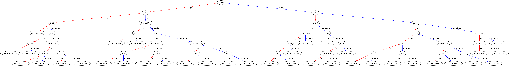
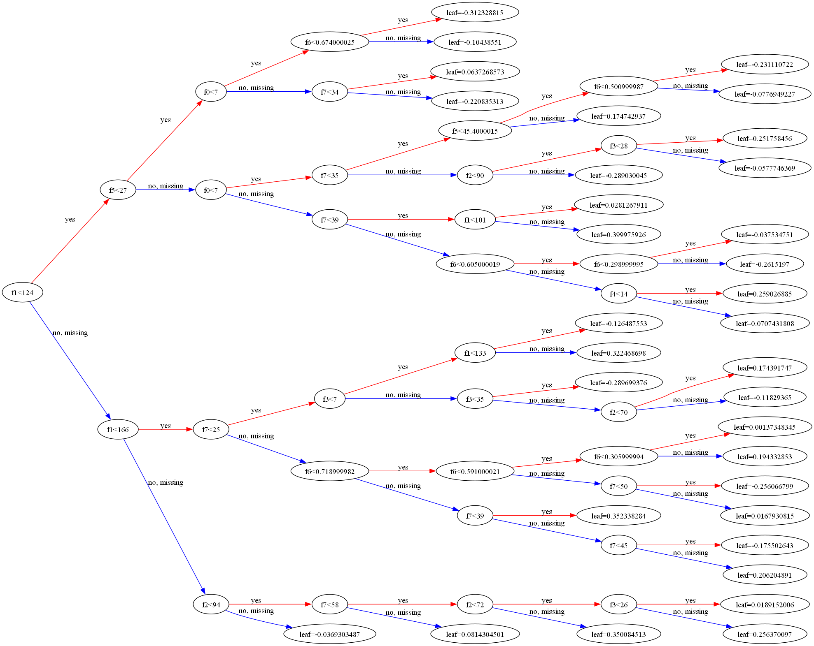

Capitulo 1¶
Bienvenido a XGBoost con Python. Este libro es tu guía para el boosting de gradiente rápido en Python. Descubrirás la biblioteca de Python para XGBoost y cómo usarla para desarrollar y evaluar modelos de boosting de gradiente. En este libro, aprenderás las técnicas, recetas y habilidades con XGBoost que luego podrás aplicar a tus propios proyectos de aprendizaje automático.
El boosting de gradiente tiene una matemática fascinante detrás, pero no necesitas conocerla para poder utilizar esta herramienta en proyectos importantes y entregar valor real. Desde una perspectiva aplicada, el boosting de gradiente es un campo bastante accesible, y un desarrollador motivado puede aprenderlo rápidamente y comenzar a hacer contribuciones reales e impactantes. Este es mi objetivo para ti, y este libro es tu boleto para lograrlo.
1.1 Organización del libro¶
Los tutoriales en este libro están divididos en tres partes:
- Conceptos Básicos de XGBoost.
- XGBoost Avanzado.
- Ajuste de XGBoost.
Además de estas tres partes, la sección de Conclusiones al final del libro incluye una lista de recursos para obtener ayuda y profundizar en el campo.
1.1.1 Conceptos Basicos de XGBoost¶
Esta parte proporciona una introducción sencilla a la biblioteca XGBoost para su uso con la biblioteca scikit-learn en Python. Después de completar los tutoriales en esta sección, conocerás los aspectos básicos de los modelos XGBoost. Específicamente, esta parte cubre:
- Una introducción sencilla al algoritmo de boosting de gradiente.
- Una introducción sencilla a la biblioteca XGBoost y por qué es tan popular.
- Cómo desarrollar tu primer modelo XGBoost desde cero.
- Cómo preparar datos para usar con XGBoost.
- Cómo evaluar el rendimiento de los modelos XGBoost entrenados.
- Cómo visualizar árboles potenciados dentro de un modelo XGBoost.
1.1.2 XGBoost Avanzado¶
Esta parte proporciona una introducción a algunas de las características más avanzadas y usos de la biblioteca XGBoost. Después de completar los tutoriales en esta sección, sabrás cómo implementar algunas de las capacidades más avanzadas del boosting de gradiente y escalar tus modelos para plataformas de hardware más grandes. Específicamente, esta parte cubre:
- Cómo serializar modelos entrenados a un archivo y luego cargarlos y utilizarlos para hacer predicciones.
- Cómo calcular las puntuaciones de importancia y utilizarlas para la selección de características.
- Cómo monitorear el rendimiento de un modelo durante el entrenamiento y establecer condiciones para la detención temprana.
- Cómo aprovechar las características paralelas de la biblioteca XGBoost para entrenar modelos más rápido.
- Cómo acelerar rápidamente el entrenamiento de modelos XGBoost utilizando la infraestructura en la nube de Amazon.
1.1.3 Ajuste de XGBoost¶
Esta parte ofrece tutoriales que detallan cómo configurar y ajustar los hiperparámetros de XGBoost. Después de completar los tutoriales en esta sección, sabrás cómo diseñar experimentos de ajuste de parámetros para obtener el máximo rendimiento de tus modelos. Específicamente, esta parte cubre:
- Una introducción a los parámetros de XGBoost y heurísticas para seleccionar buenos valores de parámetros.
- Cómo ajustar el número y tamaño de los árboles en un modelo.
- Cómo ajustar la tasa de aprendizaje y el número de árboles en un modelo.
- Cómo ajustar las tasas de muestreo en la variación estocástica del algoritmo.
1.1.4 Recetas en Python¶
Crear un catálogo de recetas de código es una parte importante de tu recorrido con XGBoost. Cada vez que aprendas una nueva técnica o un nuevo tipo de problema, deberías escribir una breve receta de código que lo demuestre. Esto te proporcionará un punto de partida para usar en tu próximo proyecto de aprendizaje automático.
Como parte de este libro, recibirás un catálogo de recetas de XGBoost. Esto incluye recetas para todos los tutoriales presentados en este libro. Se te anima encarecidamente a añadir y expandir este catálogo de recetas a medida que amplíes tu uso y conocimiento de XGBoost en Python.
1.2 Requisitos Para Este Libro¶
1.2.1 Python y SciPy¶
No necesitas ser un experto en Python, pero sería útil que supieras cómo instalar y configurar Python y SciPy. Los tutoriales asumen que tienes un entorno de Python y SciPy disponible. Esto puede ser en tu estación de trabajo o laptop, en una máquina virtual (VM) o una instancia de Docker que ejecutes, o en una instancia de servidor que puedas configurar en la nube, como se enseña en la Parte III de este libro.
Requisitos Técnicos: Los requisitos técnicos para el código y los tutoriales en este libro son los siguientes:
- Python versión 2 o 3 instalado. Este libro fue desarrollado usando Python versión 2.7.11.
- SciPy y NumPy instalados. Este libro fue desarrollado con SciPy versión 0.17.0 y NumPy versión 1.11.0.
- Matplotlib instalado. Este libro fue desarrollado con Matplotlib versión 1.5.1.
- Pandas instalado. Este libro fue desarrollado con Pandas versión 0.18.0.
- scikit-learn instalado. Este libro fue desarrollado con scikit-learn 0.18.1.
No necesitas coincidir exactamente con las versiones, pero si tienes problemas al ejecutar un ejemplo de código específico, asegúrate de actualizar a la misma versión o superior de la biblioteca especificada.
1.2.2 Aprendizaje Automático¶
No necesitas ser un experto en aprendizaje automático, pero sería útil que supieras cómo abordar un pequeño problema de aprendizaje automático usando scikit-learn. Los conceptos básicos como la validación cruzada y la codificación one-hot utilizados en los tutoriales se describen, pero solo brevemente. Hay recursos al final del libro para profundizar en estos temas, pero algún conocimiento en estas áreas podría facilitarte las cosas.
1.2.3 Boosting de Gradiente¶
No necesitas conocer las matemáticas y la teoría de los algoritmos de boosting de gradiente, pero sería útil tener alguna idea básica del campo. Recibirás un curso rápido sobre la terminología y los modelos de boosting de gradiente, pero no entraremos en mucho detalle técnico. Nuevamente, habrá recursos para más información al final del libro, pero podría ser útil comenzar con alguna idea sobre los detalles técnicos de la técnica.
1.3 Tus Resultados Al Leer Este Libro¶
Este libro te llevará de ser un desarrollador interesado en XGBoost con Python a un desarrollador que tiene los recursos y capacidades para trabajar con un nuevo conjunto de datos de principio a fin utilizando Python y desarrollar modelos de boosting de gradiente precisos. Específicamente, sabrás:
- Cómo preparar datos en scikit-learn para el boosting de gradiente.
- Cómo evaluar y visualizar modelos potenciados por gradiente.
- Cómo guardar y cargar modelos entrenados de boosting de gradiente.
- Cómo visualizar y evaluar la importancia de las variables de entrada.
- Cómo configurar y ajustar los hiperparámetros de los modelos de boosting de gradiente.
Hay varias maneras en que puedes leer este libro. Puedes sumergirte en los tutoriales según tus necesidades o intereses te motiven. Alternativamente, puedes trabajar a lo largo del libro de principio a fin y aprovechar cómo los tutoriales se vuelven más complejos y variados. Recomiendo este último enfoque.
Para aprovechar al máximo este libro, te recomiendo que tomes cada tutorial y lo desarrolles más allá. Intenta mejorar los resultados, aplica el método a un problema similar pero diferente, y así sucesivamente. Escribe lo que intentaste o aprendiste y compártelo en tu blog, en las redes sociales, o envíame un correo a jason@MachineLearningMastery.com. Este libro es realmente lo que hagas de él, y al poner un poco más de esfuerzo, puedes convertirte rápidamente en una verdadera fuerza en el campo del boosting de gradiente aplicado.
1.4 Lo Que Este Libro No Es¶
Este libro resuelve un problema específico: llevarte, como desarrollador, al nivel de aplicar XGBoost en tus propios proyectos de aprendizaje automático en Python. Por lo tanto, este libro no está diseñado para ser todo para todos, y es muy importante calibrar tus expectativas. Específicamente:
Este no es un libro de texto sobre boosting de gradiente. No cubriremos la teoría básica de cómo funcionan los algoritmos y técnicas relacionadas. No habrá ecuaciones. También se espera que tengas cierta familiaridad con los conceptos básicos del aprendizaje automático, o que seas capaz de profundizar en la teoría por tu cuenta si es necesario.
Este no es un libro de programación en Python. No dedicaremos mucho tiempo a la sintaxis de Python y a la programación (por ejemplo, tareas básicas de programación en Python). Se espera que ya estés familiarizado con Python o que seas un desarrollador que pueda aprender rápidamente un nuevo lenguaje similar a C.
Aún puedes obtener mucho de este libro si tienes debilidades en una o dos de estas áreas, pero podrías tener dificultades al aprender el lenguaje o requerir alguna explicación adicional de las técnicas. Si este es el caso, consulta el capítulo "Obteniendo Más Ayuda" al final del libro y busca un buen texto de referencia complementario.
1.5 Resumen¶
Es un momento especial en este momento. Las herramientas para el boosting de gradiente rápido nunca han sido tan buenas, y XGBoost está en la cima. El ritmo de cambio en el aprendizaje automático aplicado parece nunca haber sido tan rápido, impulsado por los resultados sorprendentes que los métodos están mostrando en una amplia gama de campos. Este es el comienzo de tu viaje en el uso de XGBoost y estoy emocionado por ti. Tómate tu tiempo, diviértete, y estoy muy emocionado de ver a dónde puedes llevar esta increíble nueva tecnología.
A continuación, en la Parte II, recibirás una introducción sencilla al algoritmo de boosting de gradiente según lo descrito por las fuentes primarias. Esto sentará las bases para comprender y utilizar la biblioteca XGBoost en Python.
Capitulo 2¶
Una Introducción Sencilla al Boosting de Gradiente¶
El boosting de gradiente es una de las técnicas más poderosas para construir modelos predictivos. En este tutorial, descubrirás el algoritmo de aprendizaje automático de boosting de gradiente y recibirás una introducción sencilla sobre su origen y cómo funciona. Después de leer este tutorial, sabrás:
- El origen del boosting en la teoría del aprendizaje y AdaBoost.
- Cómo funciona el boosting de gradiente, incluyendo la función de pérdida, los aprendices débiles y el modelo aditivo.
- Cómo mejorar el rendimiento sobre el algoritmo base con varios esquemas de regularización.
Vamos a comenzar.
Origen del Boosting¶
La idea del boosting surgió del cuestionamiento sobre si un aprendiz débil puede ser modificado para mejorar. Michael Kearns articuló el objetivo como el Problema de Potenciación de Hipótesis, estableciendo la meta desde un punto de vista práctico como:
... un algoritmo eficiente para convertir hipótesis relativamente malas en hipótesis muy buenas. — Pensamientos sobre la Potenciación de Hipótesis, 1988.
Una hipótesis débil o un aprendiz débil se define como aquel cuya performance es al menos ligeramente mejor que el azar. Estas ideas se basan en el trabajo de Leslie Valiant sobre el aprendizaje libre de distribución o Aprendizaje Aproximadamente Correcto (PAC), un marco para investigar la complejidad de los problemas de aprendizaje automático. La potenciación de hipótesis se basa en la idea de filtrar las observaciones, dejando aquellas que el aprendiz débil puede manejar y enfocándose en desarrollar nuevos aprendices débiles para manejar las observaciones difíciles restantes.
La idea es utilizar el método de aprendizaje débil varias veces para obtener una sucesión de hipótesis, cada una refocalizada en los ejemplos que las anteriores encontraron difíciles y clasificaron incorrectamente. [...] Sin embargo, no es obvio en absoluto cómo se puede hacer esto. — Probablemente Aproximadamente Correcto, página 152, 2013.
2.2 AdaBoost: El Primer Algoritmo de Potenciación¶
La primera realización del boosting que tuvo un gran éxito en su aplicación fue el Adaptive Boosting, o AdaBoost para abreviar.
Boosting se refiere a este problema general de producir una regla de predicción muy precisa combinando reglas generales y moderadamente inexactas. — Una generalización teórica de la toma de decisiones del aprendizaje en línea y una aplicación al boosting, 1995.
Los aprendices débiles en AdaBoost son árboles de decisión con una sola división, llamados decision stumps por su brevedad. AdaBoost funciona ponderando las observaciones, poniendo más peso en las instancias difíciles de clasificar y menos en aquellas que ya se manejaron bien. Se añaden nuevos aprendices débiles de manera secuencial que enfocan su entrenamiento en los patrones más difíciles.
Esto significa que las muestras difíciles de clasificar reciben pesos cada vez mayores hasta que el algoritmo identifica un modelo que clasifica correctamente estas muestras. — Modelado Predictivo Aplicado, 2013.
Las predicciones se realizan mediante el voto mayoritario de las predicciones de los aprendices débiles, ponderadas por su precisión individual. La forma más exitosa del algoritmo AdaBoost fue para problemas de clasificación binaria y se denominó AdaBoost.M1.
2.3 Generalización de AdaBoost como Gradient Boosting¶
AdaBoost y algoritmos relacionados fueron reinterpretados en un marco estadístico por primera vez por Breiman, llamándolos algoritmos ARCing.
Arcing es un acrónimo de Adaptive Reweighting and Combining. Cada paso en un algoritmo de arcing consiste en una minimización ponderada seguida de una recomputación de los clasificadores y de la entrada ponderada. — Juegos de Predicción y Algoritmos de Arching, 1997.
Este marco fue desarrollado más adelante por Friedman y se denominó Gradient Boosting Machines, más tarde conocido simplemente como gradient boosting o gradient tree boosting. El marco estadístico en el que se enmarca el boosting como un problema de optimización numérica donde el objetivo es minimizar la pérdida del modelo mediante la adición de aprendices débiles utilizando un procedimiento similar al descenso de gradiente. Esta clase de algoritmos se describe como un modelo aditivo por etapas. Esto se debe a que se añade un nuevo aprendiz débil a la vez y los aprendices débiles existentes en el modelo se congelan y se mantienen sin cambios.
Nota que esta estrategia por etapas es diferente de los enfoques paso a paso que reajustan los términos previamente ingresados cuando se añaden nuevos. — Aproximación de Funciones Codiciosa: Una Máquina de Gradient Boosting, 1999.
La generalización permitió el uso de funciones de pérdida diferenciables arbitrarias, expandiendo la técnica más allá de problemas de clasificación binaria para soportar regresión, clasificación multicategoría y más.
2.4 Cómo Funciona el Gradient Boosting¶
El gradient boosting involucra tres elementos principales:
Función de pérdida a optimizar: Es la métrica que el modelo busca minimizar. La elección de la función de pérdida depende del tipo de problema (regresión, clasificación, etc.).
Aprendiz débil: Un modelo simple que realiza predicciones. En el contexto del boosting, se utilizan modelos básicos como árboles de decisión con una sola división (stumps) o modelos de regresión lineal simples.
Modelo aditivo: El modelo en el que se añaden los aprendices débiles de manera secuencial para minimizar la función de pérdida. Cada nuevo aprendiz débil se ajusta a los errores residuales de los modelos anteriores, mejorando la precisión global del modelo.
En resumen, el proceso de gradient boosting construye un modelo robusto al añadir iterativamente aprendices débiles que corrigen los errores de los modelos previos, utilizando la optimización basada en gradientes para mejorar la precisión del modelo global.
2.4.1 Función de Pérdida¶
La función de pérdida utilizada depende del tipo de problema que se está resolviendo. Debe ser diferenciable, pero se admiten muchas funciones de pérdida estándar y puedes definir la tuya propia. Por ejemplo, en regresión se puede usar el error cuadrático y en clasificación se puede usar la pérdida logarítmica. Un beneficio del marco de gradient boosting es que no es necesario derivar un nuevo algoritmo de boosting para cada función de pérdida que se desee utilizar; en su lugar, es un marco lo suficientemente genérico como para que se pueda usar cualquier función de pérdida diferenciable.
2.4.2 Aprendiz Débil¶
Los árboles de decisión se utilizan como el aprendiz débil en gradient boosting. Específicamente, se utilizan árboles de regresión que producen valores reales para las divisiones y cuyos resultados se pueden sumar, permitiendo que los resultados de los modelos posteriores se sumen y corrijan los residuos en las predicciones. Los árboles se construyen de manera codiciosa, eligiendo los mejores puntos de división basados en puntuaciones de pureza como Gini o para minimizar la pérdida.
Inicialmente, como en el caso de AdaBoost, se usaban árboles de decisión muy cortos que solo tenían una sola división, llamados decision stumps. Generalmente se pueden usar árboles más grandes, con entre 4 y 8 niveles. Es común restringir a los aprendices débiles de maneras específicas, como un número máximo de capas, nodos, divisiones o nodos hoja. Esto es para asegurar que los aprendices permanezcan débiles, pero aún así se pueden construir de manera codiciosa.
2.4.3 Modelo Aditivo¶
Los árboles se añaden uno a la vez, y los árboles existentes en el modelo no se modifican. Se utiliza un procedimiento de descenso por gradiente para minimizar la pérdida al añadir árboles. Tradicionalmente, el descenso por gradiente se usa para minimizar un conjunto de parámetros, como los coeficientes en una ecuación de regresión o los pesos en una red neuronal. Después de calcular el error o la pérdida, se actualizan los pesos para minimizar ese error.
En lugar de parámetros, tenemos sub-modelos de aprendices débiles o, más específicamente, árboles de decisión. Después de calcular la pérdida, para realizar el procedimiento de descenso por gradiente, debemos añadir un árbol al modelo que reduzca la pérdida (es decir, seguir el gradiente). Hacemos esto parametrizando el árbol, luego modificamos los parámetros del árbol y nos movemos en la dirección correcta (reduciendo la pérdida residual). Generalmente, este enfoque se llama descenso por gradiente funcional o descenso por gradiente con funciones.
Una forma de producir una combinación ponderada de clasificadores que optimice el costo es mediante descenso por gradiente en el espacio de funciones. — Algoritmos de Boosting como Descenso por Gradiente en el Espacio de Funciones, 1999.
La salida del nuevo árbol se añade luego a la salida de la secuencia existente de árboles en un esfuerzo por corregir o mejorar la salida final del modelo. Se añaden un número fijo de árboles o el entrenamiento se detiene una vez que la pérdida alcanza un nivel aceptable o ya no mejora en un conjunto de datos de validación externo.
2.5 Mejoras al Gradient Boosting Básico¶
El gradient boosting es un algoritmo codicioso y puede sobreajustar rápidamente un conjunto de datos de entrenamiento. Puede beneficiarse de métodos de regularización que penalizan diversas partes del algoritmo y, en general, mejoran el rendimiento del algoritmo al reducir el sobreajuste. En esta sección, examinaremos 4 mejoras al gradient boosting básico:
Restricciones de Árboles: Limitar la complejidad de los árboles, como el número máximo de niveles, nodos o divisiones, para evitar que los árboles se vuelvan demasiado complejos y sobreajusten los datos.
Reducción (Shrinkage): También conocida como reducción de tasa de aprendizaje. Consiste en multiplicar las actualizaciones de los árboles por un factor menor a 1. Esto ralentiza el proceso de aprendizaje, permitiendo que el modelo se ajuste de manera más controlada y minimizando el riesgo de sobreajuste.
Muestreo Aleatorio: Se refiere a técnicas como el submuestreo de datos o el submuestreo de características en cada iteración para entrenar los árboles. Esto introduce variabilidad en el proceso de entrenamiento y ayuda a reducir el sobreajuste al evitar que el modelo dependa demasiado de cualquier subconjunto particular de los datos.
Aprendizaje Penalizado: Incorporar penalizaciones en el proceso de entrenamiento, como la penalización L1 o L2, para evitar que el modelo ajuste demasiado los datos y mejorar la generalización. Esto puede ayudar a reducir el impacto de las características menos relevantes y mejorar la robustez del modelo.
Estas mejoras ayudan a que el algoritmo de gradient boosting sea más robusto y efectivo en una variedad de contextos, reduciendo el riesgo de sobreajuste y mejorando su capacidad de generalización.
2.5.1 Restricciones de Árboles¶
Es importante que los aprendices débiles tengan habilidad pero permanezcan débiles. Existen varias formas de restringir la construcción de los árboles. Una buena heurística general es que cuanto más restringida sea la creación de árboles, más árboles necesitarás en el modelo, y al contrario, con árboles menos restringidos, se requerirán menos árboles. A continuación se presentan algunas restricciones que se pueden imponer en la construcción de árboles de decisión:
Número de árboles: En general, añadir más árboles al modelo puede ser muy lento para sobreajustar. El consejo es seguir añadiendo árboles hasta que no se observe una mejora adicional.
Profundidad del árbol: Los árboles más profundos son más complejos, y se prefieren árboles más cortos. Generalmente, se obtienen mejores resultados con entre 4 y 8 niveles.
Número de nodos o número de hojas: Al igual que la profundidad, esto puede restringir el tamaño del árbol, pero no está limitado a una estructura simétrica si se utilizan otras restricciones.
Número de observaciones por división: Impone una restricción mínima en la cantidad de datos de entrenamiento en un nodo de entrenamiento antes de que se pueda considerar una división.
Mejora mínima de la pérdida: Es una restricción sobre la mejora de cualquier división añadida a un árbol. Esto asegura que solo se añadan divisiones que proporcionen una mejora significativa en la reducción de la pérdida.
2.5.2 Actualizaciones Ponderadas¶
Las predicciones de cada árbol se suman secuencialmente. La contribución de cada árbol a esta suma puede ser ponderada para ralentizar el aprendizaje del algoritmo. Este ponderado se llama reducción o tasa de aprendizaje.
Cada actualización se escala simplemente por el valor del parámetro de tasa de aprendizaje v. — Aproximación de Funciones Codiciosa: Una Máquina de Gradient Boosting, 1999.
El efecto es que el aprendizaje se ralentiza, lo que a su vez requiere añadir más árboles al modelo, tomando más tiempo para entrenar y proporcionando un equilibrio de configuración entre el número de árboles y la tasa de aprendizaje.
Disminuir el valor de $v$ [la tasa de aprendizaje] aumenta el mejor valor para $M$ [el número de árboles]. — Aproximación de Funciones Codiciosa: Una Máquina de Gradient Boosting, 1999.
Es común tener valores pequeños en el rango de 0.1 a 0.3, así como valores menores de 0.1. Similar a una tasa de aprendizaje en la optimización estocástica, la reducción disminuye la influencia de cada árbol individual y deja espacio para que los árboles futuros mejoren el modelo. — Gradient Boosting Estocástico, 1999.
2.5.3 Gradient Boosting Estocástico¶
Una gran idea de los conjuntos de bagging y los bosques aleatorios fue permitir que los árboles se crearan codiciosamente a partir de submuestras del conjunto de datos de entrenamiento. Este mismo beneficio se puede utilizar para reducir la correlación entre los árboles en la secuencia en los modelos de gradient boosting. Esta variación del boosting se llama gradient boosting estocástico.
En cada iteración, se extrae al azar (sin reemplazo) una submuestra de los datos de entrenamiento del conjunto de datos completo. La submuestra seleccionada al azar se utiliza, en lugar de la muestra completa, para ajustar el aprendiz base. — Gradient Boosting Estocástico, 1999.
Algunas variantes del boosting estocástico que se pueden utilizar son:
- Submuestreo de filas antes de crear cada árbol.
- Submuestreo de columnas antes de crear cada árbol.
- Submuestreo de columnas antes de considerar cada división.
En general, el submuestreo agresivo, como seleccionar solo el 50% de los datos, ha demostrado ser beneficioso.
Según la retroalimentación de los usuarios, el uso de submuestreo de columnas previene aún más el sobreajuste en comparación con el submuestreo de filas tradicional. — XGBoost: Un Sistema de Boosting de Árboles Escalable, 2016.
2.5.4 Gradient Boosting Penalizado¶
Se pueden imponer restricciones adicionales a los árboles parametrizados además de su estructura. Los árboles de decisión clásicos, como los CART, no se utilizan como aprendices débiles; en su lugar, se utiliza una forma modificada llamada árbol de regresión que tiene valores numéricos en los nodos hoja (también llamados nodos terminales). Los valores en las hojas de los árboles pueden ser llamados pesos en algunas literaturas. Por lo tanto, los valores de peso en las hojas de los árboles pueden ser regularizados utilizando funciones de regularización populares, tales como:
- Regularización $L^1$ de los pesos.
- Regularización $L^2$ de los pesos.
El término adicional de regularización ayuda a suavizar los pesos finales aprendidos para evitar el sobreajuste. Intuitivamente, el objetivo regularizado tenderá a seleccionar un modelo que emplee funciones simples y predictivas. — XGBoost: Un Sistema de Boosting de Árboles Escalable, 2016.
2.6 Resumen¶
En este tutorial, descubriste el algoritmo de gradient boosting para modelado predictivo en aprendizaje automático. Ahora tienes una comprensión general del algoritmo de gradient boosting, así como de las variaciones comunes de la técnica. Específicamente, aprendiste:
- La historia del boosting en la teoría del aprendizaje y AdaBoost.
- Cómo funciona el algoritmo de gradient boosting con una función de pérdida, aprendices débiles y un modelo aditivo.
- Cómo mejorar el rendimiento del gradient boosting con regularización.
En la siguiente sección, comenzarás a usar la biblioteca XGBoost, empezando con una introducción suave a la biblioteca XGBoost en sí.
Capitulo 3¶
Una Introducción Suave a XGBoost¶
XGBoost es un algoritmo que ha dominado recientemente el aprendizaje automático aplicado y las competencias de Kaggle para datos estructurados o tabulares. XGBoost es una implementación de árboles de decisión potenciados por gradient boosting, diseñado para velocidad y rendimiento. En este tutorial, descubrirás XGBoost y obtendrás una introducción suave a lo que es, de dónde proviene y cómo puedes aprender más. Después de leer este tutorial, sabrás:
- Qué es XGBoost y los objetivos del proyecto.
- Por qué XGBoost debe formar parte de tu caja de herramientas de aprendizaje automático.
- Dónde puedes aprender más para comenzar a usar XGBoost en tu próximo proyecto de aprendizaje automático.
¡Comencemos!
3.1 ¿Qué es XGBoost?¶
XGBoost significa eXtreme Gradient Boosting.
El nombre xgboost se refiere, en realidad, al objetivo de ingeniería de llevar al límite los recursos computacionales para algoritmos de árboles potenciados. Esta es la razón por la cual muchas personas utilizan xgboost. — Tianqi Chen, en Quora.com.
Es una implementación de gradient boosting machines creada por Tianqi Chen, ahora con contribuciones de muchos desarrolladores. Pertenece a una colección más amplia de herramientas bajo el paraguas de la Distributed Machine Learning Community (DMLC), quienes también son los creadores de la popular biblioteca de aprendizaje profundo mxnet. Tianqi Chen proporciona una breve e interesante historia sobre la creación de XGBoost en el tutorial "Historia y Lecciones Detrás de la Evolución de XGBoost".
XGBoost es una biblioteca de software que puedes descargar e instalar en tu máquina, y luego acceder desde una variedad de interfaces. Específicamente, XGBoost soporta las siguientes interfaces principales:
- Interfaz de Línea de Comandos (CLI).
- C++ (el lenguaje en el que está escrita la biblioteca).
- Interfaz de Python así como un modelo en scikit-learn.
- Interfaz de R así como un modelo en el paquete caret.
- Soporte para Julia.
- Java y lenguajes JVM como Scala y plataformas como Hadoop.
3.2 Características de XGBoost¶
La biblioteca está enfocada en la velocidad computacional y el rendimiento del modelo, por lo que tiene pocas extravagancias. No obstante, ofrece varias características avanzadas.
3.2.1 Características del Modelo¶
La implementación del modelo soporta las características de las implementaciones de scikit-learn y R, con adiciones nuevas como la regularización. Se soportan tres formas principales de gradient boosting:
- Algoritmo de Gradient Boosting, también llamado máquina de gradient boosting, que incluye la tasa de aprendizaje.
- Gradient Boosting Estocástico, con submuestreo a nivel de filas, columnas y columnas por división.
- Gradient Boosting Regularizado, con regularización tanto $L^1$ como $L^2$.
3.2.2 Características del Sistema¶
La biblioteca proporciona un sistema para su uso en una variedad de entornos de computación, entre ellos:
- Paralelización de la construcción de árboles utilizando todos los núcleos de CPU durante el entrenamiento.
- Computación Distribuida para entrenar modelos muy grandes utilizando un clúster de máquinas.
- Computación Fuera de Núcleo para conjuntos de datos muy grandes que no caben en la memoria.
- Optimización de Caché de estructuras de datos y algoritmos para aprovechar al máximo el hardware.
3.2.3 Características del Algoritmo¶
La implementación del algoritmo fue diseñada para la eficiencia en el tiempo de cómputo y los recursos de memoria. Un objetivo del diseño fue hacer el mejor uso posible de los recursos disponibles para entrenar el modelo. Algunas características clave de la implementación del algoritmo incluyen:
- Implementación Consciente de Datos Escasos con manejo automático de valores de datos faltantes.
- Estructura en Bloques para soportar la paralelización en la construcción de árboles.
- Entrenamiento Continuo para que puedas seguir potenciando un modelo ya ajustado con nuevos datos.
XGBoost es software libre de código abierto disponible para su uso bajo la licencia permisiva Apache-2.
3.3 ¿Por qué usar XGBoost?¶
Las dos razones para usar XGBoost también son los dos objetivos del proyecto:
- Velocidad de Ejecución.
- Rendimiento del Modelo.
3.3.1 Velocidad de Ejecución de XGBoost¶
En general, XGBoost es rápido. Realmente rápido en comparación con otras implementaciones de gradient boosting. Szilard Pafka realizó algunas pruebas objetivas comparando el rendimiento de XGBoost con otras implementaciones de gradient boosting y árboles de decisión con bagging. Publicó sus resultados en mayo de 2015 en el blog tutorial titulado "Benchmarking Random Forest Implementations".
También proporciona todo el código en GitHub y un informe más extenso de los resultados con cifras concretas. Sus resultados mostraron que XGBoost era casi siempre más rápido que las otras implementaciones comparadas de R, Python Spark y H2O. Según su experimento, comentó:
"También probé xgboost, una biblioteca popular para boosting que también es capaz de construir bosques aleatorios. Es rápida, eficiente en memoria y de alta precisión." — Benchmarking Random Forest Implementations, Szilard Pafka.
3.3.2 Rendimiento del Modelo de XGBoost¶
XGBoost domina en problemas de modelado predictivo de clasificación y regresión para conjuntos de datos estructurados o tabulares. La evidencia de su eficacia es que es el algoritmo preferido por los ganadores de competiciones en la plataforma de ciencia de datos competitiva Kaggle. Por ejemplo, hay una lista incompleta de ganadores del primer, segundo y tercer lugar en competiciones que usaron XGBoost titulada: "XGBoost: Soluciones Ganadoras de Desafíos de Machine Learning"$^5$. Para hacer este punto más tangible, a continuación se presentan algunas citas perspicaces de los ganadores de competiciones de Kaggle:
"Como ganador de una creciente cantidad de competiciones de Kaggle, XGBoost nos ha demostrado nuevamente ser un gran algoritmo versátil que vale la pena tener en tu caja de herramientas." — Entrevista a los Ganadores de Dato, Mad Professors $^6$.
3http://datascience.la/benchmarking-random-forest-implementations/ 4https://github.com/szilard/benchm-ml 5https://github.com/dmlc/xgboost/tree/master/demo 6http://goo.gl/AHkmWx
"Cuando tengas dudas, usa XGBoost." — Entrevista al Ganador de Avito, Owen Zhang.
"Me encantan los modelos individuales que funcionan bien, y mi mejor modelo individual fue un XGBoost que logró el décimo lugar por sí solo." — Entrevista a los Ganadores de Caterpillar.
"Solo usé XGBoost." — Entrevista al Ganador de Inspección de Propiedades de Liberty Mutual, Qingchen Wang.
"El único método de aprendizaje supervisado que utilicé fue el gradient boosting, tal como se implementa en el excelente paquete XGBoost." — Entrevista al Ganador de Compra de Cupones de Recruit, Halla Yang.
3.4 ¿Qué Algoritmo Utiliza XGBoost?¶
La biblioteca XGBoost implementa el algoritmo de árboles de decisión con gradient boosting. Este algoritmo es conocido por varios nombres, como gradient boosting, árboles de regresión aditivos múltiples, gradient boosting estocástico o máquinas de gradient boosting. El boosting es una técnica de ensamblaje donde se añaden nuevos modelos para corregir los errores cometidos por los modelos existentes. Los modelos se añaden secuencialmente hasta que no se pueden hacer más mejoras. Un ejemplo popular es el algoritmo AdaBoost, que pondera los puntos de datos que son difíciles de predecir.
El gradient boosting es un enfoque en el que se crean nuevos modelos que predicen los residuos o errores de los modelos anteriores y luego se suman para hacer la predicción final. Se llama gradient boosting porque utiliza un algoritmo de descenso de gradiente para minimizar la pérdida al añadir nuevos modelos. Este enfoque admite problemas de modelado predictivo tanto de regresión como de clasificación.
3.5 Resumen¶
En este tutorial, descubriste XGBoost y por qué es tan popular en el aprendizaje automático aplicado. Aprendiste:
- Que XGBoost es una biblioteca para desarrollar modelos de árboles de decisión con gradient boosting rápidos y de alto rendimiento.
- Que XGBoost está logrando el mejor rendimiento en una variedad de tareas difíciles de aprendizaje automático.
- Que puedes usar esta biblioteca desde la línea de comandos, Python y R, y cómo empezar.
En el siguiente tutorial, desarrollarás tu primer modelo de XGBoost desde cero.
7http://goo.gl/sGyGtu 8http://goo.gl/Sku8vw 9http://goo.gl/0LTOBl 10http://goo.gl/wTUH7y
Capitulo 4¶
Desarrolla Tu Primer Modelo de XGBoost en Python con scikit-learn¶
XGBoost es una implementación de árboles de decisión con gradient boosting, diseñada para velocidad y rendimiento, que domina el aprendizaje automático competitivo. En este tutorial, descubrirás cómo instalar y crear tu primer modelo de XGBoost en Python. Después de leer este tutorial, sabrás:
- Cómo instalar XGBoost en tu sistema para su uso en Python.
- Cómo preparar los datos y entrenar tu primer modelo de XGBoost.
- Cómo hacer predicciones usando tu modelo de XGBoost.
¡Vamos a empezar!
Instalación de XGBoost¶
Si ya tienes un entorno SciPy en funcionamiento, puedes instalar XGBoost fácilmente usando pip. Por ejemplo:
pip install xgboost
Este comando descargará e instalará la biblioteca XGBoost y sus dependencias en tu entorno de Python. Una vez completada la instalación, podrás importar XGBoost y comenzar a desarrollar modelos.
Para actualizar tu instalación de XGBoost, puedes usar el siguiente comando:
pip install --upgrade xgboost
Este comando actualizará XGBoost a la versión más reciente disponible en el repositorio de pip.
Para instalar XGBoost de forma alternativa, si no puedes usar pip o si deseas ejecutar el código más reciente desde GitHub, debes clonar el proyecto de XGBoost y realizar una construcción e instalación manual. Por ejemplo, para construir XGBoost sin multithreading en Mac OS X (con GCC ya instalado a través de macports o homebrew), puedes seguir estos pasos:
Clona el repositorio de XGBoost:
git clone --recursive https://github.com/dmlc/xgboost
Navega al directorio del proyecto:
cd xgboost
Construye e instala XGBoost:
mkdir build cd build cmake .. -DGBM_USE_CUDA=OFF make -j$(sysctl -n hw.ncpu)
Instala XGBoost:
cd ../python-package python setup.py install
Esto construirá e instalará XGBoost desde el código fuente en tu sistema. Asegúrate de tener todas las herramientas necesarias para la construcción, como CMake y GCC, instaladas en tu máquina.
A continuación, algunos recursos para ayudarte con la instalación de la biblioteca XGBoost en tu plataforma:
Puedes aprender más sobre cómo instalar XGBoost para diferentes plataformas en la Guía de Instalación de XGBoost.
Para instrucciones actualizadas sobre la instalación de XGBoost para Python, consulta el Paquete de Python de XGBoost.
XGBoost v0.6 es la versión más reciente en el momento de escribir esto y es la utilizada en este libro.
4.2 Descripción del Problema: Predicción del Inicio de Diabetes¶
En este tutorial, vamos a utilizar el conjunto de datos de inicio de diabetes de los Indios Pima. Este conjunto de datos está compuesto por 8 variables de entrada que describen detalles médicos de los pacientes y una variable de salida que indica si el paciente desarrollará diabetes en un plazo de 5 años. Puedes aprender más sobre este conjunto de datos en el sitio web de UCI Machine Learning Repository.
Este es un buen conjunto de datos para un primer modelo con XGBoost porque todas las variables de entrada son numéricas y el problema es una simple clasificación binaria. No es necesariamente un problema ideal para el algoritmo XGBoost porque se trata de un conjunto de datos relativamente pequeño y un problema fácil de modelar.
Descarga este conjunto de datos y colócalo en tu directorio de trabajo actual con el nombre de archivo pima-indians-diabetes.csv. Puedes descargarlo desde el siguiente enlace:
Descargar conjunto de datos de diabetes de los Indios Pima
Después de descargarlo, asegúrate de cambiar el nombre del archivo a pima-indians-diabetes.csv y guardarlo en el directorio donde estés trabajando con tu código Python.
4.3 Carga y preparacion de los datos¶
En esta sección, cargaremos los datos desde el archivo y los prepararemos para su uso en el entrenamiento y la evaluación de un modelo XGBoost. Comenzaremos importando las clases y funciones que utilizaremos en este tutorial.
import pandas as pd
import xgboost
import matplotlib.pyplot as plt
from numpy import loadtxt
from xgboost import XGBClassifier
from sklearn.model_selection import train_test_split
from sklearn.metrics import accuracy_score
from xgboost import plot_tree
import warnings
warnings.filterwarnings('ignore')
A continuación, podemos cargar el archivo CSV como un array de NumPy utilizando la función loadtxt() de NumPy.
# load data
# dataset = loadtxt('DataFrames/diabetes.csv', delimiter=",")
# Cargar datos
dataset = pd.read_csv('DataFrames/diabetes.csv', delimiter=",")
Debemos separar las columnas (atributos o características) del conjunto de datos en patrones de entrada (X) y patrones de salida (Y). Podemos hacer esto fácilmente especificando los índices de las columnas en el formato de array de NumPy.
# datos como un array de numpy
dataset = dataset.values
# split data into X and y
X = dataset[:,0:8]
Y = dataset[:,8]
# Dividir los datos en X y Y
# X = dataset.iloc[:, 0:8].values
# Y = dataset.iloc[:, 8].values
Finalmente, debemos dividir los datos de X e Y en un conjunto de entrenamiento y un conjunto de prueba. El conjunto de entrenamiento se utilizará para preparar el modelo XGBoost, y el conjunto de prueba se utilizará para hacer nuevas predicciones, a partir de las cuales podremos evaluar el rendimiento del modelo. Para esto, utilizaremos la función train_test_split() de la biblioteca scikit-learn. También especificamos una semilla para el generador de números aleatorios, de modo que siempre obtengamos la misma división de datos cada vez que se ejecute este ejemplo.
# Separacion de datos en entrenamiento y prueba
seed = 7
test_size = 0.33
X_train, X_test, y_train, y_test = train_test_split(X, Y, test_size = test_size,
random_state = seed)
Ahora estamos listos para entrenar nuestro modelo.
4.4 Entrenamiento del Modelo XGBoost¶
XGBoost ofrece una clase envoltura que permite tratar los modelos como clasificadores o regresores en el marco de trabajo de scikit-learn. Esto significa que podemos utilizar toda la biblioteca de scikit-learn con los modelos XGBoost. El modelo XGBoost para clasificación se llama XGBClassifier. Podemos crear y ajustarlo a nuestro conjunto de datos de entrenamiento. Los modelos se ajustan utilizando la API de scikit-learn y la función model.fit(). Los parámetros para entrenar el modelo pueden pasarse al modelo en el constructor. Aquí, utilizamos los valores predeterminados razonables.
# Ajuste el modelo a los datos de entrenamiento
model = XGBClassifier()
model.fit(X_train, y_train)
XGBClassifier(base_score=None, booster=None, callbacks=None,
colsample_bylevel=None, colsample_bynode=None,
colsample_bytree=None, device=None, early_stopping_rounds=None,
enable_categorical=False, eval_metric=None, feature_types=None,
gamma=None, grow_policy=None, importance_type=None,
interaction_constraints=None, learning_rate=None, max_bin=None,
max_cat_threshold=None, max_cat_to_onehot=None,
max_delta_step=None, max_depth=None, max_leaves=None,
min_child_weight=None, missing=nan, monotone_constraints=None,
multi_strategy=None, n_estimators=None, n_jobs=None,
num_parallel_tree=None, random_state=None, ...)In a Jupyter environment, please rerun this cell to show the HTML representation or trust the notebook. On GitHub, the HTML representation is unable to render, please try loading this page with nbviewer.org.
XGBClassifier(base_score=None, booster=None, callbacks=None,
colsample_bylevel=None, colsample_bynode=None,
colsample_bytree=None, device=None, early_stopping_rounds=None,
enable_categorical=False, eval_metric=None, feature_types=None,
gamma=None, grow_policy=None, importance_type=None,
interaction_constraints=None, learning_rate=None, max_bin=None,
max_cat_threshold=None, max_cat_to_onehot=None,
max_delta_step=None, max_depth=None, max_leaves=None,
min_child_weight=None, missing=nan, monotone_constraints=None,
multi_strategy=None, n_estimators=None, n_jobs=None,
num_parallel_tree=None, random_state=None, ...)Puedes ver los parámetros utilizados en un modelo entrenado imprimiendo el modelo, por ejemplo:
plt.figure(figsize=(20, 10))
plot_tree(model, num_trees=2, rankdir='TB') # `rankdir='LR'` para un árbol de izquierda a derecha
plt.figure(figsize=(20, 10))
plt.show()
<Figure size 2000x1000 with 0 Axes>
![No description has been provided for this image]()
<Figure size 2000x1000 with 0 Axes>
# Graficar Boosting usando graphviz
from graphviz import Digraph
import xgboost as xgb
# Exportacion el modelo a un formato dot
dot_data = xgb.to_graphviz(model, num_trees=0, rankdir='TB')
# Guardamos en un archivo .dot
with open('tree.dot', 'w') as f:
f.write(dot_data.source)
# Convertir .dot a .png usando Graphviz
with open('tree.png', 'wb') as f:
f.write(dot_data.pipe(format='png'))
print(model.get_params())
{'objective': 'binary:logistic', 'base_score': None, 'booster': None, 'callbacks': None, 'colsample_bylevel': None, 'colsample_bynode': None, 'colsample_bytree': None, 'device': None, 'early_stopping_rounds': None, 'enable_categorical': False, 'eval_metric': None, 'feature_types': None, 'gamma': None, 'grow_policy': None, 'importance_type': None, 'interaction_constraints': None, 'learning_rate': None, 'max_bin': None, 'max_cat_threshold': None, 'max_cat_to_onehot': None, 'max_delta_step': None, 'max_depth': None, 'max_leaves': None, 'min_child_weight': None, 'missing': nan, 'monotone_constraints': None, 'multi_strategy': None, 'n_estimators': None, 'n_jobs': None, 'num_parallel_tree': None, 'random_state': None, 'reg_alpha': None, 'reg_lambda': None, 'sampling_method': None, 'scale_pos_weight': None, 'subsample': None, 'tree_method': None, 'validate_parameters': None, 'verbosity': None}
Ahora estamos listos para usar el modelo entrenado para hacer predicciones.
4.5 Realizar Predicciones con el Modelo XGBoost¶
Podemos hacer predicciones utilizando el modelo ajustado en el conjunto de datos de prueba. Para hacer predicciones, usamos la función model.predict() de scikit-learn.
# Realizamos predicciones para los datos de prueba
predictions = model.predict(X_test)
Ahora que hemos utilizado el modelo ajustado para hacer predicciones con nuevos datos, podemos evaluar el rendimiento de las predicciones comparándolas con los valores esperados. Para ello, utilizaremos la función de puntuación de precisión (accuracy_score()) incorporada en scikit-learn.
# Evaluacion de Predicciones
accuracy = accuracy_score(y_test, predictions)
print(f"Accuracy: {accuracy*100:.2f}%")
Accuracy: 72.83%
4.6 Unirlo Todo
Podemos unir todas estas piezas, a continuación se muestra el código completo.
# Librerias para manejo de DF
import pandas as pd
from numpy import loadtxt
# Libreria del modelo XGBoost
import xgboost as xgb
from xgboost import XGBClassifier
# Librerias para metricas de evaluacion
from sklearn.model_selection import train_test_split
from sklearn.metrics import accuracy_score
# Librerias para Graficos
from xgboost import plot_tree
import matplotlib.pyplot as plt
# Graficar Boosting usando graphviz
from graphviz import Digraph
# Lectura del DF
dataset = pd.read_csv('DataFrames/diabetes.csv', delimiter=",")
# Convertimos los datos a un array de numpy
dataset = dataset.values
# Dividir los datos en X e y
X = dataset[:,0:8]
Y = dataset[:,8]
# Separacion de datos en entrenamiento y prueba
seed = 7
test_size = 0.33
X_train, X_test, y_train, y_test = train_test_split(X, Y, test_size = test_size,
random_state = seed)
# Ajuste el modelo a los datos de entrenamiento
model = XGBClassifier()
model.fit(X_train, y_train)
## Grafica del Boosting
# Exportacion el modelo a un formato dot
dot_data = xgb.to_graphviz(model, num_trees=0, rankdir='TB')
# Guardamos en un archivo .dot
with open('Graficos/tree.dot', 'w') as f:
f.write(dot_data.source)
# Convertir .dot a .png usando Graphviz
with open('Graficos/tree.png', 'wb') as f:
f.write(dot_data.pipe(format='png'))
# Realizamos predicciones para los datos de prueba
predictions = model.predict(X_test)
# Evaluacion de Predicciones
accuracy = accuracy_score(y_test, predictions)
print(f"Accuracy: {accuracy*100:.2f}%")
Accuracy: 72.83%
Ejecutar este ejemplo produce la siguiente salida.
Accuracy: 72.83%
Este es un buen puntaje de precisión para este problema, lo cual esperábamos, dado las capacidades del modelo y la modesta complejidad del problema.
4.7 Resumen¶
En este tutorial descubriste cómo desarrollar tu primer modelo XGBoost en Python. Específicamente, aprendiste:
- Cómo instalar XGBoost en tu sistema para usarlo con Python.
- Cómo preparar los datos y entrenar tu primer modelo XGBoost en un conjunto de datos de machine learning estándar.
- Cómo hacer predicciones y evaluar el rendimiento de un modelo XGBoost entrenado usando scikit-learn.
En el siguiente tutorial, desarrollarás estas habilidades y aprenderás cómo preparar mejor tus datos para el modelado con XGBoost.
Capítulo 5¶
Preparación de Datos para el Gradient Boosting¶
XGBoost es una implementación popular de Gradient Boosting debido a su velocidad y rendimiento. Internamente, los modelos XGBoost representan todos los problemas como un problema de modelado predictivo de regresión que solo acepta valores numéricos como entrada. Si tus datos están en una forma diferente, deben prepararse en el formato esperado. En este tutorial descubrirás cómo preparar tus datos para su uso con gradient boosting utilizando la biblioteca XGBoost en Python. Después de leer este tutorial, sabrás:
- Cómo codificar variables de salida en formato de cadena para clasificación.
- Cómo preparar variables de entrada categóricas utilizando codificación one-hot.
- Cómo manejar automáticamente datos faltantes con XGBoost.
¡Vamos a comenzar!
5.1 Codificación de Etiquetas para Valores de Clase en Cadena¶
El problema de clasificación de flores de iris es un ejemplo de un problema que tiene un valor de clase en cadena. Se trata de un problema de predicción en el que, dadas las medidas de las flores de iris en centímetros, la tarea es predecir a qué especie pertenece una flor dada. A continuación se muestra una muestra del conjunto de datos en bruto. Puedes aprender más sobre este conjunto de datos y descargar los datos en bruto en formato CSV desde el Repositorio de Aprendizaje Automático de UCI.
# !pip install ucimlrepo
from ucimlrepo import fetch_ucirepo
# fetch dataset
iris = fetch_ucirepo(id=53)
# data (as pandas dataframes)
X = iris.data.features
y = iris.data.targets
# # metadata
# print(iris.metadata)
# # variable information
# print(iris.variables)
XGBoost no puede modelar este problema tal como está, ya que requiere que las variables de salida sean numéricas. Podemos convertir fácilmente los valores de cadena en valores enteros utilizando el LabelEncoder. Los tres valores de clase (Iris-setosa, Iris-versicolor, Iris-virginica) se mapean a los valores enteros $(0, 1, 2)$.
# Codificar los valores de clase de una cadena como enteros
label_encoder = LabelEncoder()
label_encoder = label_encoder.fit(Y)
label_encoded_y = label_encoder.transform(Y)
Guardamos el codificador de etiquetas como un objeto separado para que podamos transformar tanto los conjuntos de datos de entrenamiento como los de prueba y validación utilizando el mismo esquema de codificación. A continuación se muestra un ejemplo completo que muestra cómo cargar el conjunto de datos iris. Observe que Pandas se utiliza para cargar los datos para manejar los valores de clase de cadena.
# Clasificacion Multiclase
from pandas import read_csv
from xgboost import XGBClassifier
from sklearn.model_selection import train_test_split
from sklearn.metrics import accuracy_score
from sklearn.preprocessing import LabelEncoder
from ucimlrepo import fetch_ucirepo
# Carga de los datos
# data = read_csv('iris.csv', header=None) ----
# dataset = data.values
data = fetch_ucirepo(id=53)
# Separacion de los datos en X e y
X = data.data.features
Y = data.data.targets
# Codificamos los valores de clase de una cadena como enteros
label_encoder = LabelEncoder()
label_encoder = label_encoder.fit(Y)
label_encoded_y = label_encoder.transform(Y)
# Separacion de los datos en entrenamiento y prueba
seed = 7
test_size = 0.33
X_train, X_test, y_train, y_test = train_test_split(X, label_encoded_y,
test_size=test_size, random_state=seed)
# Ajuste del modelo a los datos de entrenamiento
model = XGBClassifier()
model.fit(X_train, y_train)
#print(model)
## Grafica del Boosting
# Exportacion el modelo a un formato dot
dot_data = xgb.to_graphviz(model, num_trees=0, rankdir='TB')
# Guardamos en un archivo .dot
with open('Graficos/treeIris.dot', 'w') as f:
f.write(dot_data.source)
# Convertir .dot a .png usando Graphviz
with open('Graficos/treeIris.png', 'wb') as f:
f.write(dot_data.pipe(format='png'))
# Realizamos predicciones con los datos de prueba
predictions = model.predict(X_test)
# Evaluacion de las predicciones
accuracy = accuracy_score(y_test, predictions)
print("Accuracy: %.2f%%" % (accuracy * 100.0))
Accuracy: 90.00%
Observa cómo el modelo de XGBoost está configurado para modelar automáticamente el problema de clasificación multiclase utilizando el objetivo multi:softprob, una variación de la función de pérdida softmax para modelar las probabilidades de las clases. Esto sugiere que, internamente, la clase de salida se convierte automáticamente en un tipo de codificación one hot.
5.2 Codificación One Hot de Datos Categóricos¶
Algunos conjuntos de datos contienen solo datos categóricos, por ejemplo, el conjunto de datos de cáncer de mama. Este conjunto de datos describe los detalles técnicos de las biopsias de cáncer de mama, y la tarea de predicción consiste en determinar si el paciente tendrá una recurrencia del cáncer o no. A continuación se muestra una muestra del conjunto de datos en bruto. Puedes aprender más sobre este conjunto de datos en el UCI Machine Learning Repository y descargarlo en formato CSV desde mldata.org.
from ucimlrepo import fetch_ucirepo
# fetch dataset
breast_cancer = fetch_ucirepo(id=14)
# data (as pandas dataframes)
X = breast_cancer.data.features
y = breast_cancer.data.targets
# metadata
print(breast_cancer.metadata)
# variable information
print(breast_cancer.variables)
{'uci_id': 14, 'name': 'Breast Cancer', 'repository_url': 'https://archive.ics.uci.edu/dataset/14/breast+cancer', 'data_url': 'https://archive.ics.uci.edu/static/public/14/data.csv', 'abstract': 'This breast cancer domain was obtained from the University Medical Centre, Institute of Oncology, Ljubljana, Yugoslavia. This is one of three domains provided by the Oncology Institute that has repeatedly appeared in the machine learning literature. (See also lymphography and primary-tumor.)', 'area': 'Health and Medicine', 'tasks': ['Classification'], 'characteristics': ['Multivariate'], 'num_instances': 286, 'num_features': 9, 'feature_types': ['Categorical'], 'demographics': ['Age'], 'target_col': ['Class'], 'index_col': None, 'has_missing_values': 'yes', 'missing_values_symbol': 'NaN', 'year_of_dataset_creation': 1988, 'last_updated': 'Thu Mar 07 2024', 'dataset_doi': '10.24432/C51P4M', 'creators': ['Matjaz Zwitter', 'Milan Soklic'], 'intro_paper': None, 'additional_info': {'summary': 'This data set includes 201 instances of one class and 85 instances of another class. The instances are described by 9 attributes, some of which are linear and some are nominal.\n', 'purpose': None, 'funded_by': None, 'instances_represent': None, 'recommended_data_splits': None, 'sensitive_data': None, 'preprocessing_description': None, 'variable_info': ' 1. Class: no-recurrence-events, recurrence-events\r\n 2. age: 10-19, 20-29, 30-39, 40-49, 50-59, 60-69, 70-79, 80-89, 90-99.\r\n 3. menopause: lt40, ge40, premeno.\r\n 4. tumor-size: 0-4, 5-9, 10-14, 15-19, 20-24, 25-29, 30-34, 35-39, 40-44, 45-49, 50-54, 55-59.\r\n 5. inv-nodes: 0-2, 3-5, 6-8, 9-11, 12-14, 15-17, 18-20, 21-23, 24-26, 27-29, 30-32, 33-35, 36-39.\r\n 6. node-caps: yes, no.\r\n 7. deg-malig: 1, 2, 3.\r\n 8. breast: left, right.\r\n 9. breast-quad: left-up, left-low, right-up,\tright-low, central.\r\n 10. irradiat:\tyes, no.', 'citation': 'Obtained from the University Medical Centre, Institute of Oncology, Ljubljana, Yugoslavia. Thanks go to M. Zwitter and M. Soklic for providing the data. Please include this citation if you plan to use this database:\nMatjaz Zwitter & Milan Soklic (physicians)\nInstitute of Oncology \nUniversity Medical Center\nLjubljana, Yugoslavia'}}
name role type demographic \
0 Class Target Binary None
1 age Feature Categorical Age
2 menopause Feature Categorical None
3 tumor-size Feature Categorical None
4 inv-nodes Feature Categorical None
5 node-caps Feature Binary None
6 deg-malig Feature Integer None
7 breast Feature Binary None
8 breast-quad Feature Categorical None
9 irradiat Feature Binary None
description units missing_values
0 no-recurrence-events, recurrence-events None no
1 10-19, 20-29, 30-39, 40-49, 50-59, 60-69, 70-7... years no
2 lt40, ge40, premeno None no
3 0-4, 5-9, 10-14, 15-19, 20-24, 25-29, 30-34, 3... None no
4 0-2, 3-5, 6-8, 9-11, 12-14, 15-17, 18-20, 21-... None no
5 yes, no None yes
6 1, 2, 3 None no
7 left, right None no
8 left-up, left-low, right-up,\tright-low, central None yes
9 yes, no None no
Podemos ver que las 9 variables de entrada son categóricas y están descritas en formato de cadena. El problema es una tarea de predicción de clasificación binaria, y los valores de las clases de salida también están descritos en formato de cadena. Podemos reutilizar el mismo enfoque de la sección anterior y convertir los valores de las clases en cadena a valores enteros para modelar la predicción utilizando LabelEncoder. Por ejemplo:
# Codificamos los valores de clase de una cadena como enteros
label_encoder = LabelEncoder()
label_encoder = label_encoder.fit(Y)
label_encoded_y = label_encoder.transform(Y)
Podemos usar este mismo enfoque en cada característica de entrada en X, pero esto es solo un punto de partida.
# Codificacion de los valores de clase de una cadena como enteros
features = []
for i in range(0, X.shape[1]):
label_encoder = LabelEncoder()
feature = label_encoder.fit_transform(X[:, i])
features.append(feature)
encoded_x = numpy.array(features)
encoded_x = encoded_x.reshape(X.shape[0], X.shape[1])
XGBoost puede asumir que los valores enteros codificados para cada variable de entrada tienen una relación ordinal. Por ejemplo, que "left-up" codificado como 0 y "left-low" codificado como 1 para la variable breast-quad tienen una relación significativa como enteros. En este caso, esta suposición es incorrecta. En su lugar, debemos mapear estos valores enteros en nuevas variables binarias, una nueva variable para cada valor categórico. Por ejemplo, la variable breast-quad tiene los valores:
left-up
left-low
right-up
right-low
central
Podemos modelar esto como 5 variables binarias de la siguiente manera:
![image.png]()
Esto se llama codificación one hot. Podemos aplicar la codificación one hot a todas las variables categóricas de entrada utilizando la clase OneHotEncoder en scikit-learn. Podemos codificar one hot cada característica después de haberla codificado con etiquetas. Primero, debemos transformar el array de características en un array de NumPy de 2 dimensiones, donde cada valor entero es un vector de características con una longitud de 1.
feature = feature.reshape(X.shape[0], 1)
Luego podemos crear el OneHotEncoder y codificar el array de características.
onehot_encoder = OneHotEncoder(sparse=False)
feature = onehot_encoder.fit_transform(feature)
Finalmente, podemos construir el conjunto de datos de entrada concatenando las características codificadas en one hot, una por una. Terminamos con un vector de entrada compuesto por 43 variables de entrada binarias.
# encode string input values as integers
columns = []
for i in range(0, X.shape[1]):
label_encoder = LabelEncoder()
feature = label_encoder.fit_transform(X[:,i])
feature = feature.reshape(X.shape[0], 1)
onehot_encoder = OneHotEncoder(sparse=False)
feature = onehot_encoder.fit_transform(feature)
columns.append(feature)
# colapsar columnas en un arreglo
encoded_x = numpy.column_stack(columns)
Idealmente, podríamos experimentar con no aplicar one hot encoding a algunos de los atributos de entrada, ya que podríamos codificarlos con una relación ordinal explícita, por ejemplo, la primera columna age con valores como 40-49 y 50-59. Esto se deja como un ejercicio, si estás interesado en extender este ejemplo. A continuación se muestra el ejemplo completo con variables de entrada codificadas tanto con label encoding como con one hot encoding, y la variable de salida codificada con label encoding.
# binary classification, breast cancer dataset, label and one hot encoded
from numpy import column_stack
from pandas import read_csv
from xgboost import XGBClassifier
from sklearn.model_selection import train_test_split
from sklearn.metrics import accuracy_score
from sklearn.preprocessing import LabelEncoder
from sklearn.preprocessing import OneHotEncoder
# Cargamos la base
data = read_csv('DataFrames/datasetsUciBreastCancer.csv', header=None)
dataset = data.values
# Separamos los datos de X e y
X = dataset[:,0:9]
X = X.astype(str)
Y = dataset[:,9]
# Codificar los valores de entrada de cadena como enteros.
columns = []
for i in range(0, X.shape[1]):
label_encoder = LabelEncoder()
feature = label_encoder.fit_transform(X[:,i])
feature = feature.reshape(X.shape[0], 1)
onehot_encoder = OneHotEncoder(sparse=False)
feature = onehot_encoder.fit_transform(feature)
columns.append(feature)
# Colapsar(combinar) columnas en un arreglo.
encoded_x = column_stack(columns)
print("X shape: : ", encoded_x.shape)
# Codificar los valores de clase en cadena como enteros.
label_encoder = LabelEncoder()
label_encoder = label_encoder.fit(Y)
label_encoded_y = label_encoder.transform(Y)
# Dividir los datos en conjuntos de entrenamiento y prueba.
seed = 7
test_size = 0.33
X_train, X_test, y_train, y_test = train_test_split(encoded_x, label_encoded_y,
test_size=test_size, random_state=seed)
# Ajuste del modelo a los datos de entrenamiento
model = XGBClassifier()
model.fit(X_train, y_train)
# print(model)
# Realizamos predicciones con ls datos de prueba
predictions = model.predict(X_test)
# Evaluamos las predicciones
accuracy = accuracy_score(y_test, predictions)
print("Accuracy: %.2f%%" % (accuracy * 100.0))
X shape: : (286, 43) Accuracy: 69.47%
Running this example we get the following output:
X shape: : (286, 43)
Accuracy: 69.47%
Nuevamente, podemos ver que el marco de XGBoost eligió automáticamente el objetivo binary:logistic, que es el objetivo correcto para este problema de clasificación binaria.
5.3 Soporte para Datos Faltantes¶
XGBoost puede aprender automáticamente cómo manejar mejor los datos faltantes. De hecho, XGBoost fue diseñado para trabajar con datos dispersos, como los datos codificados en caliente de la sección anterior, y los datos faltantes se manejan de la misma manera que los valores dispersos o cero, minimizando la función de pérdida. Para más información sobre los detalles técnicos de cómo se manejan los valores faltantes en XGBoost, consulta la Sección 3.4 "Sparsity-aware Split Finding" en el artículo XGBoost: A Scalable Tree Boosting System.
El conjunto de datos Horse Colic es un buen ejemplo para demostrar esta capacidad, ya que contiene un gran porcentaje de datos faltantes, aproximadamente el 30%. Puedes aprender más sobre el conjunto de datos Horse Colic y descargar el archivo de datos crudos desde el repositorio de aprendizaje automático de UCI. Los valores están separados por espacios en blanco y podemos cargarlo fácilmente usando la función read_csv() de Pandas.
dataframe = read_csv("horse-colic.csv", delim_whitespace=True, header=None)
Una vez cargado, podemos ver que los datos faltantes están marcados con un carácter de interrogación (?). Podemos cambiar estos valores faltantes al valor disperso esperado por XGBoost, que es el valor cero (0).
# Asignar los valores faltantes a 0.
X[X == '?'] = 0
Debido a que los datos faltantes estaban marcados como cadenas, las columnas con datos faltantes se cargaron como tipos de datos de cadena. Ahora podemos convertir todo el conjunto de datos de entrada a valores numéricos.
# Convertir datos a numericos
X = X.astype('float32')
Finalmente, este es un problema de clasificación binaria aunque los valores de las clases están marcados con los enteros 1 y 2. Modelamos los problemas de clasificación binaria en XGBoost como valores logísticos 0 y 1. Podemos convertir fácilmente el conjunto de datos Y a enteros 0 y 1 usando el LabelEncoder, como lo hicimos en el ejemplo de las flores de iris.
# encode Y class values as integers
label_encoder = LabelEncoder()
label_encoder = label_encoder.fit(Y)
label_encoded_y = label_encoder.transform(Y)
A continuación se proporciona el código completo para mayor claridad.
# # binary classification, missing data
# from pandas import read_csv
# from xgboost import XGBClassifier
# from sklearn.model_selection import train_test_split
# from sklearn.metrics import accuracy_score
# from sklearn.preprocessing import LabelEncoder
# # load data
# # fetch dataset
# horse_colic = fetch_ucirepo(id=47)
# # data (as pandas dataframes)
# X = horse_colic.data.features
# y = horse_colic.data.targets
# # dataframe = read_csv("horse-colic.csv", delim_whitespace=True, header=None)
# # dataset = dataframe.values
# # # split data into X and y
# # X = dataset[:,0:27]
# # Y = dataset[:,27]
# # set missing values to 0
# X[X == '?'] = 0
# # convert to numeric
# X = X.astype('float32')
# # encode Y class values as integers
# label_encoder = LabelEncoder()
# label_encoder = label_encoder.fit(Y)
# label_encoded_y = label_encoder.transform(Y)
# # split data into train and test sets
# seed = 7
# test_size = 0.33
# X_train, X_test, y_train, y_test = train_test_split(X, label_encoded_y,
# test_size=test_size, random_state=seed)
# # fit model on training data
# model = XGBClassifier()
# model.fit(X_train, y_train)
# print(model)
# # make predictions for test data
# predictions = model.predict(X_test)
# # evaluate predictions
# accuracy = accuracy_score(y_test, predictions)
# print("Accuracy: %.2f%%" % (accuracy * 100.0))
# binary classification, missing data
from pandas import read_csv
from xgboost import XGBClassifier
from sklearn.model_selection import train_test_split
from sklearn.metrics import accuracy_score
from sklearn.preprocessing import LabelEncoder
from ucimlrepo import fetch_ucirepo
# Cargar el dataset desde UCIMLrepo
horse_colic = fetch_ucirepo(id=47)
# Obtener los datos como DataFrames de pandas
X = horse_colic.data.features
y = horse_colic.data.targets
# Manejo de valores faltantes
# Reemplazar valores faltantes '?' por 0
X[X == '?'] = 0
# Convertir los datos a tipo numérico
X = X.astype('float32')
# Codificar los valores de clase en y como enteros
label_encoder = LabelEncoder()
label_encoded_y = label_encoder.fit_transform(y)
# Dividir los datos en conjuntos de entrenamiento y prueba
seed = 7
test_size = 0.33
X_train, X_test, y_train, y_test = train_test_split(X, label_encoded_y, test_size=test_size, random_state=seed)
# Ajustar el modelo con los datos de entrenamiento
model = XGBClassifier()
model.fit(X_train, y_train)
# Hacer predicciones con los datos de prueba
predictions = model.predict(X_test)
# Evaluar las predicciones
accuracy = accuracy_score(y_test, predictions)
print(f"Accuracy: {accuracy * 100:.2f}%")
Accuracy: 82.79%
Podemos desentrañar el efecto del manejo automático de valores faltantes de XGBoost, marcando los valores faltantes con un valor no cero, como 1.
X[X == '?'] = 1
Volver a ejecutar el ejemplo demuestra una disminución en la precisión del modelo.
Accuracy: 82.79%
También podemos marcar los valores como NaN y permitir que el marco de trabajo de XGBoost trate los valores faltantes como un valor distinto para la característica.
import numpy
...
X[X == '?'] = numpy.nan
Volver a ejecutar el ejemplo demuestra una pequeña mejora en la precisión del modelo.
accuracy:
También podemos imputar los datos faltantes con un valor específico. Es común usar una media o una mediana para la columna. Podemos imputar fácilmente los datos faltantes utilizando la clase Imputer de scikit-learn.
# impute missing values as the mean
imputer = Imputer()
imputed_x = imputer.fit_transform(X)
A continuación se muestra el ejemplo completo con los datos faltantes imputados con el valor medio de cada columna.
# binary classification, missing data, impute with mean
import numpy
from pandas import read_csv
from xgboost import XGBClassifier
from sklearn.model_selection import train_test_split
from sklearn.metrics import accuracy_score
from sklearn.preprocessing import LabelEncoder
from sklearn.impute import SimpleImputer# load data
# Cargar el dataset desde UCIMLrepo
dataset = fetch_ucirepo(id=47)
# Obtener los datos como DataFrames de pandas
X = dataset.data.features
Y = dataset.data.targets
# dataframe = read_csv("horse-colic.csv", delim_whitespace=True, header=None)
# dataset = dataframe.values
# # split data into X and y
# X = dataset[:,0:27]
# Y = dataset[:,27]
# set missing values to NaN
X[X == '?'] = numpy.nan
# convert to numeric
X = X.astype('float32')
# impute missing values as the mean
imputer = SimpleImputer(strategy='mean')
imputed_x = imputer.fit_transform(X)
# encode Y class values as integers
label_encoder = LabelEncoder()
label_encoder = label_encoder.fit(Y)
label_encoded_y = label_encoder.transform(Y)
# split data into train and test sets
seed = 7
test_size = 0.33
X_train, X_test, y_train, y_test = train_test_split(imputed_x, label_encoded_y,
test_size=test_size, random_state=seed)
# fit model on training data
model = XGBClassifier()
model.fit(X_train, y_train)
print(model)
# make predictions for test data
predictions = model.predict(X_test)
# evaluate predictions
accuracy = accuracy_score(y_test, predictions)
print("Accuracy: %.2f%%" % (accuracy * 100.0))
XGBClassifier(base_score=None, booster=None, callbacks=None,
colsample_bylevel=None, colsample_bynode=None,
colsample_bytree=None, device=None, early_stopping_rounds=None,
enable_categorical=False, eval_metric=None, feature_types=None,
gamma=None, grow_policy=None, importance_type=None,
interaction_constraints=None, learning_rate=None, max_bin=None,
max_cat_threshold=None, max_cat_to_onehot=None,
max_delta_step=None, max_depth=None, max_leaves=None,
min_child_weight=None, missing=nan, monotone_constraints=None,
multi_strategy=None, n_estimators=None, n_jobs=None,
num_parallel_tree=None, random_state=None, ...)
Accuracy: 81.15%
Al ejecutar este ejemplo, vemos resultados equivalentes a fijar el valor en uno (1). Esto sugiere que, al menos en este caso, es mejor marcar los valores faltantes con un valor distinto como NaN o cero (0) en lugar de un valor válido (1) o un valor imputado.
accuracy: 81.15%
Es una buena lección probar ambos enfoques (manejo automático e imputación) en tus datos cuando tienes valores faltantes.
5.4 Resumen¶
En este tutorial descubriste cómo preparar tus datos de aprendizaje automático para el gradient boosting con XGBoost en Python. Específicamente, aprendiste:
- Cómo preparar valores de clase en formato de cadena para la clasificación binaria utilizando codificación de etiquetas.
- Cómo preparar variables de entrada categóricas utilizando codificación one hot para modelarlas como variables binarias.
- Cómo XGBoost maneja automáticamente los datos faltantes y cómo puedes marcar e imputar valores faltantes.
En el próximo tutorial, construirás sobre estas capacidades y descubrirás cómo evaluar el rendimiento de tus modelos de XGBoost.
Capítulo 6¶
Cómo Evaluar Modelos de XGBoost¶
El objetivo de desarrollar un modelo predictivo es crear un modelo que sea preciso en datos no vistos. Esto se puede lograr mediante técnicas estadísticas en las que el conjunto de datos de entrenamiento se utiliza cuidadosamente para estimar el rendimiento del modelo en datos nuevos y no vistos. En este tutorial, descubrirás cómo evaluar el rendimiento de tus modelos de gradient boosting con XGBoost en Python. Después de completar este tutorial, sabrás:
- Cómo evaluar el rendimiento de tus modelos de XGBoost utilizando conjuntos de datos de entrenamiento y prueba.
- Cómo evaluar el rendimiento de tus modelos de XGBoost utilizando validación cruzada k-fold.
Vamos a empezar.
6.1 Evaluar Modelos con Conjuntos de Entrenamiento y Prueba¶
El método más simple que podemos utilizar para evaluar el rendimiento de un algoritmo de aprendizaje automático es usar diferentes conjuntos de datos de entrenamiento y prueba. Podemos tomar nuestro conjunto de datos original y dividirlo en dos partes. Entrenamos el algoritmo en la primera parte, luego hacemos predicciones en la segunda parte y evaluamos las predicciones comparándolas con los resultados esperados. El tamaño de la división puede depender del tamaño y las especificaciones de tu conjunto de datos, aunque es común utilizar el 67% de los datos para el entrenamiento y el 33% restante para las pruebas.
Esta técnica de evaluación de algoritmos es rápida. Es ideal para conjuntos de datos grandes (millones de registros) donde hay una fuerte evidencia de que ambas divisiones de los datos son representativas del problema subyacente. Debido a la velocidad, es útil usar este enfoque cuando el algoritmo que estás investigando es lento de entrenar. Un inconveniente de esta técnica es que puede tener una alta varianza. Esto significa que las diferencias en los conjuntos de datos de entrenamiento y prueba pueden resultar en diferencias significativas en la estimación de la precisión del modelo. Podemos dividir el conjunto de datos en un conjunto de entrenamiento y prueba utilizando la función train_test_split() de la biblioteca scikit-learn. Por ejemplo, podemos dividir el conjunto de datos en un 67% para entrenamiento y un 33% para prueba de la siguiente manera:
# split data into train and test sets
X_train, X_test, y_train, y_test = train_test_split(X, Y, test_size=0.33, random_state=7)
El listado completo de código se proporciona a continuación utilizando el conjunto de datos de inicio de diabetes en los indios Pima, que se asume que está en el directorio de trabajo actual (ver Sección 4.2). Se ajusta un modelo XGBoost con la configuración predeterminada en el conjunto de datos de entrenamiento y se evalúa en el conjunto de datos de prueba.
# train-test split evaluation of xgboost model
from numpy import loadtxt
from xgboost import XGBClassifier
from sklearn.model_selection import train_test_split
from sklearn.metrics import accuracy_score
# load data
# dataset = loadtxt('pima-indians-diabetes.csv', delimiter=",")
# # split data into X and y
# X = dataset[:,0:8]
# Y = dataset[:,8]
# Lectura del DF
dataset = pd.read_csv('DataFrames/diabetes.csv', delimiter=",")
# Convertimos los datos a un array de numpy
dataset = dataset.values
# Dividir los datos en X e y
X = dataset[:,0:8]
Y = dataset[:,8]
# split data into train and test sets
X_train, X_test, y_train, y_test = train_test_split(X, Y, test_size=0.33, random_state=7)
# fit model on training data
model = XGBClassifier()
model.fit(X_train, y_train)
# make predictions for test data
predictions = model.predict(X_test)
# evaluate predictions
accuracy = accuracy_score(y_test, predictions)
print("Accuracy: %.2f%%" % (accuracy * 100.0))
Accuracy: 72.83%
Ejecutar este ejemplo resume el rendimiento del modelo en el conjunto de datos de prueba.
Accuracy: 72.83%
6.2 Evaluar Modelos con Validación Cruzada k-Fold¶
La validación cruzada es un enfoque que puedes usar para estimar el rendimiento de un algoritmo de aprendizaje automático con menos varianza que una única división en conjuntos de entrenamiento y prueba. Funciona dividiendo el conjunto de datos en k partes (por ejemplo, k = 5 o k = 10). Cada división del conjunto de datos se llama pliegue (fold). El algoritmo se entrena en k − 1 pliegues, manteniendo uno de reserva y probando en el pliegue reservado. Esto se repite de manera que cada pliegue del conjunto de datos tenga la oportunidad de ser el conjunto de prueba reservado.
Después de realizar la validación cruzada, obtienes k puntuaciones de rendimiento diferentes que puedes resumir usando una media y una desviación estándar. El resultado es una estimación más fiable del rendimiento del algoritmo en nuevos datos dado tu conjunto de datos de prueba. Es más preciso porque el algoritmo se entrena y evalúa múltiples veces en diferentes datos. La elección de k debe permitir que el tamaño de cada partición de prueba sea lo suficientemente grande como para ser una muestra razonable del problema, al tiempo que permite suficientes repeticiones de la evaluación de entrenamiento-prueba del algoritmo para proporcionar una estimación justa del rendimiento del algoritmo en datos no vistos.
Para conjuntos de datos de tamaño moderado, con miles o decenas de miles de observaciones, son comunes los valores de k de 3, 5 y 10. Podemos usar el soporte de validación cruzada k-fold proporcionado en scikit-learn. Primero, debemos crear el objeto KFold especificando el número de pliegues y el tamaño del conjunto de datos. Luego, podemos usar este esquema con el conjunto de datos específico. La función cross_val_score() de scikit-learn nos permite evaluar un modelo utilizando el esquema de validación cruzada y devuelve una lista de las puntuaciones para cada modelo entrenado en cada pliegue.
kfold = KFold(n_splits=10, random_state=7)
results = cross_val_score(model, X, Y, cv=kfold)
El listado completo del código para evaluar un modelo XGBoost con validación cruzada k-fold se proporciona a continuación para mayor claridad.
# k-fold cross validation evaluation of xgboost model
from numpy import loadtxt
from xgboost import XGBClassifier
from sklearn.model_selection import KFold
from sklearn.model_selection import cross_val_score
# load data
# dataset = loadtxt('pima-indians-diabetes.csv', delimiter=",")
# Lectura del DF
dataset = pd.read_csv('DataFrames/diabetes.csv', delimiter=",")
# Convertimos los datos a un array de numpy
dataset = dataset.values
# split data into X and y
X = dataset[:,0:8]
Y = dataset[:,8]
# CV model
model = XGBClassifier()
kfold = KFold(n_splits=10, shuffle=True, random_state=7)
results = cross_val_score(model, X, Y, cv=kfold)
print("Accuracy: %.2f%% (%.2f%%)" % (results.mean()*100, results.std()*100))
Accuracy: 72.66% (4.55%)
Ejecutar este ejemplo resume el rendimiento de la configuración predeterminada del modelo en el conjunto de datos, incluyendo tanto la precisión promedio como la desviación estándar en la clasificación.
Accuracy: 72.66% (4.55%)
Si tienes muchas clases para un problema de modelado predictivo de clasificación o las clases están desbalanceadas (hay muchas más instancias para una clase que para otra), puede ser una buena idea crear pliegues estratificados al realizar la validación cruzada. Esto tiene el efecto de mantener la misma distribución de clases en cada pliegue que en el conjunto de datos de entrenamiento completo al realizar la evaluación de la validación cruzada. La biblioteca scikit-learn proporciona esta capacidad en la clase StratifiedKFold. A continuación, se muestra el mismo ejemplo modificado para usar validación cruzada estratificada para evaluar un modelo XGBoost.
# stratified k-fold cross validation evaluation of xgboost model
from numpy import loadtxt
from xgboost import XGBClassifier
from sklearn.model_selection import StratifiedKFold
from sklearn.model_selection import cross_val_score
# load data
# dataset = loadtxt('pima-indians-diabetes.csv', delimiter=",")
# Lectura del DF
dataset = pd.read_csv('DataFrames/diabetes.csv', delimiter=",")
# Convertimos los datos a un array de numpy
dataset = dataset.values
# split data into X and y
X = dataset[:,0:8]
Y = dataset[:,8]
# CV model
model = XGBClassifier()
kfold = StratifiedKFold(n_splits=10, shuffle=True, random_state=7)
results = cross_val_score(model, X, Y, cv=kfold)
print("Accuracy: %.2f%% (%.2f%%)" % (results.mean()*100, results.std()*100))
Accuracy: 73.57% (3.40%)
Ejecutar este ejemplo produce la siguiente salida.
Accuracy: 73.57% (3.40%)
Notarás que el rendimiento es ligeramente superior y la variación es menor en el resultado.
6.3 Qué Técnicas Utilizar Cuándo¶
- En general, la validación cruzada con k-fold es el estándar de oro para evaluar el rendimiento de un algoritmo de aprendizaje automático en datos no vistos, con k establecido en 3, 5 o 10.
- Utiliza la validación cruzada estratificada para hacer cumplir las distribuciones de clases cuando hay un gran número de clases o un desequilibrio en las instancias para cada clase.
- Usar una división de entrenamiento/prueba es bueno para la velocidad cuando se utiliza un algoritmo lento y produce estimaciones de rendimiento con menor sesgo cuando se utilizan conjuntos de datos grandes.
El mejor consejo es experimentar y encontrar una técnica para tu problema que sea rápida y produzca estimaciones razonables de rendimiento que puedas usar para tomar decisiones. Si tienes dudas, utiliza la validación cruzada con 10 pliegues para problemas de regresión y la validación cruzada estratificada con 10 pliegues para problemas de clasificación.
6.4 Resumen¶
En este tutorial descubriste cómo puedes evaluar tus modelos XGBoost estimando cómo de bien es probable que se desempeñen en datos no vistos. Específicamente, aprendiste:
- Cómo dividir tu conjunto de datos en subconjuntos de entrenamiento y prueba para entrenar y evaluar el rendimiento de tu modelo.
- Cómo puedes crear k modelos XGBoost en diferentes subconjuntos del conjunto de datos y promediar las puntuaciones para obtener una estimación más robusta del rendimiento del modelo.
- Heurísticas para ayudar a elegir entre la división entrenamiento-prueba y la validación cruzada con k-pliegues para tu problema.
En el próximo tutorial, descubrirás cómo puedes utilizar la visualización para comprender mejor los árboles potenciados dentro de un modelo entrenado.
Capítulo 7¶
Visualiza los Árboles Individuales Dentro de un Modelo¶
Trazar árboles de decisión individuales puede proporcionar información sobre el proceso de gradient boosting para un conjunto de datos determinado. En este tutorial, descubrirás cómo puedes trazar árboles de decisión individuales a partir de un modelo de gradient boosting entrenado utilizando XGBoost en Python. ¡Comencemos!
7.1 Trazar un Solo Árbol de Decisión de XGBoost¶
La API de Python de XGBoost proporciona una función para trazar árboles de decisión dentro de un modelo entrenado de XGBoost. Esta capacidad se ofrece a través de la función plot_tree(), que toma un modelo entrenado como primer argumento. Por ejemplo:
plot_tree(model)
Esto traza el primer árbol en el modelo (el árbol en el índice 0). Este gráfico se puede guardar en un archivo o mostrar en pantalla usando Matplotlib y pyplot.show(). Esta capacidad de trazado requiere que tengas instalada la biblioteca graphviz. Podemos crear un modelo XGBoost en el conjunto de datos sobre la aparición de diabetes en los indios Pima y trazar el primer árbol en el modelo (ver Sección 4.2). El código completo se proporciona a continuación.
# plot decision tree
from numpy import loadtxt
from xgboost import XGBClassifier
from xgboost import plot_tree
from matplotlib import pyplot
# load data
# dataset = loadtxt('pima-indians-diabetes.csv', delimiter=",")
# Lectura del DF
dataset = pd.read_csv('DataFrames/diabetes.csv', delimiter=",")
# Convertimos los datos a un array de numpy
dataset = dataset.values
# split data into X and y
X = dataset[:,0:8]
y = dataset[:,8]
# fit model on training data
model = XGBClassifier()
model.fit(X, y)
# plot single tree
plot_tree(model)
pyplot.show()
![No description has been provided for this image]()
## Grafica del Boosting
# Exportacion el modelo a un formato dot
dot_data = xgb.to_graphviz(model, num_trees=4, rankdir='LR')
# Guardamos en un archivo .dot
with open('Graficos/treeEjemplo4.dot', 'w') as f:
f.write(dot_data.source)
# Convertir .dot a .png usando Graphviz
with open('Graficos/treeEjemplo4.png', 'wb') as f:
f.write(dot_data.pipe(format='png'))
Ejecutar el código genera un gráfico del primer árbol de decisión en el modelo (índice 0), mostrando las características y los valores de características para cada división, así como los nodos hoja de salida.

Puedes ver que las variables están nombradas automáticamente como f1 y f5, correspondientes a los índices de características en el array de entrada. Puedes observar las decisiones de división dentro de cada nodo y los diferentes colores para las divisiones izquierda y derecha (azul y rojo). La función plot_tree() tiene algunos parámetros que puedes ajustar. Puedes visualizar gráficos específicos al indicar su índice en el argumento num_trees. Por ejemplo, para trazar el quinto árbol impulsado en la secuencia, puedes usar el siguiente código:
plot_tree(model, num_trees=4)
También puedes cambiar el diseño del gráfico para que sea de izquierda a derecha (más fácil de leer) modificando el argumento rankdir a LR (de izquierda a derecha) en lugar del valor predeterminado TB (de arriba hacia abajo). Por ejemplo:
plot_tree(model, num_trees=0, rankdir='LR')
El resultado de trazar el árbol en el diseño de izquierda a derecha se muestra a continuación.

7.2 Resumen
En este tutorial aprendiste cómo trazar árboles de decisión individuales a partir de un modelo de XGBoost entrenado en Python. Esto concluye la Parte II de este libro. A continuación, en la Parte III, construirás sobre estas habilidades básicas con XGBoost, comenzando con cómo guardar y cargar un modelo de XGBoost en un archivo.